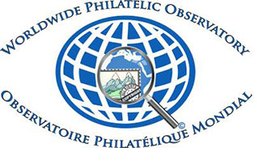

|
|

Article for L'Arte del Francobollo» - March 2014
«A life with the Postage Stamp a cultural window open onto the world»
After having worked for many years in an international organization and having been involved in various aspects of philately, I wish to continue to make a contribution to stamp collecting in particular.
I feel it is very important that stamp collectors know that their hobby is the subject of a great deal of work that is being accomplished on the international scene under the umbrella of the Universal Postal Union, the specialized Agency of the United Nations that coordinates postal activities among the countries of the world.
The postage stamp, widely known as the «itinerant and miniature ambassador of each country» , became the origin and source of philately and stamp collecting that have been identified as the hobby of kings and the king of hobbies . Philately has a long history now of being a hobby of tremendous cultural importance, continuing to attract people from all over the world, of all ages, cultures and professions, of all walks of life.
It is in this context that I would like to share my personal relationship to stamps. Collecting stamps and postcards also became a hobby of mine since I was in grade school when I began to write letters to other students my age who lived in many different countries around the world. These students became my penpals . I was an immigrant from Eastern Europe who ended up living in a small village in an isolated area of northern Canada and being able to exchange those letters with so many other young people my age, was like travelling around the world to get to know other cultures and peoples, even though it was a virtual experience at the time.
My eyes and mind were so taken with the beauty and meaning of the culture of the different countries represented on the postcards and stamps that I received, that I was encouraged to start the hobby of stamp collecting and to start learning different languages. The postage stamps on the letters also represented for me «windows opening up new horizons», «bridges linking civilizations» , and «miniature works of art» representing the cultural diversity and socio-economic heritage of the countries where my penpals lived.
Today, I still have among my personal papers some of the postcards with the stamps that I had received at that time. Later, as a university student, I spent a summer travelling around Europe and visited most of the European penpals that I still had who lived in Austria, Belgium, England, France, Greece, Italy, Portugal and Spain.
Consequently, when I ended up working as an international official with the UPU, I was immensely pleased when I was given the opportunity to work with postage stamps. Indeed, working to widen interest in philately and stamp collecting and to safeguard national identity on stamps became one of the more rewarding areas in which I had the privilege to be involved during my career of more than 25 years at the UPU. There was not only constant interaction with the member states, the stamp issuing countries, but also with major international and philatelic organizations, and of course, the stamp collectors themselves.
One of my main goals as Programme Manager of Philately at the UPU, during a mandate of almost ten years, was to help increase awareness amongst the UPU member countries as to the importance of best and sound business practices and principles in favour of the development of philately way beyond the national borders of the country concerned, and the safeguarding and preservation of the image, identity and reputation of the country concerned through its postage stamp. All the more so, that for quite some time already, the reputation of the postage stamp as a symbol of sovereignty and « itinerant and miniature ambassador» of its nation was regularly under serious attack from abusive and illegal industry practices. It was a valuable asset for my work with philately that I had earlier gained experience with developing postal security and revenue protection initiatives such as organising measures against counterfeit and illegals stamps that were rewarding and stimulating challenges.
A full-time activity was the management of the Secretariat of UPU's most important philatelic institutional body, the WADP (the World Association for the Development of Philately) that I helped to create in 1997 and was constituted of the main philatelic industry partners as well as the UPU member countries. As Secretary of the WADP and officer responsible for philately, I was regularly in contact and exchanging ideas with the Presidents and the members of the Boards of the international philatelic organisations such as the AIJP (Philatelic Journalists, ASCAT (Stamp Catalogue Publishers), FIP (the Stamp Collectors), IFSDA (Stamp Dealers) and INTERGRAF (Security Printers).
The postal organisations of mostly the developing countries were in urgent need of guidance and tools to help them better manage their stamp production and to ensure the development of philately and stamp collecting in their countries. In this regard, I piloted a Task Force that ensured the production of the «Guide for the Development of Philately» in eight languages (Arabic, Chinese, English, French, German, Portugese, Russian and Spanish). This Guide served as the basis for standard training practices and modules for training courses and workshops, in particular for the African and Eastern European countries.
The organisation of and participation in worldwide stamp competitions was a popular form of promoting philately at the institutional level because we were able to get a wide spectrum of philatelic partners involved as well as the normal philatelist and stamp collector. Stamp competitions involving children and the schools were also introduced in many countries.
As one of the first joint activities with a philatelic partner, the FIP, a competition of the best artwork was organised for a special service stamp to be issued in 1999 by Switzerland to commemorate the 125th anniversary of the UPU. Stamp collectors from around the world were called upon to participate in the voting by correspondence. The winning artwork received a special FIP award that was announced at a special ceremony organised at the United Nations Headquarters in Geneva.
In cooperation with different programmes of the United Nations, I had the opportunity to encourage UPU member states to issue stamps commemorating the different international years decided on by the United Nations General Assembly. There was also regular interaction with the Philatelic Group of the International Olympic Committee (the IOC) that came to the UPU for support to protect the intellectual property of its Olympic Rings. In this regard, we would send out a specific letter to all UPU member states. Cooperation at the highest level was also organised with FIFA, the Federation of International Football Associations, to protect its intellectual property and to encourage countries to issue stamps as a way of promoting its world cups.
Another area where promoting philately was cultivated was by developing cooperation with museums specializing in communications. In this regard, contacts were also regular with UNESCO (the United Nations Educational, Scientific and Cultural Organization) that has, as one of its strategies, to provide support to museums that foster an integrated approach to cultural heritage as well as the links of continuity between creation and heritage. Many communications museums have special sections reserved for postage stamps as well as the philatelic archives linked to the issuing of stamps in general. These museums regularly receive from the UPU Secretariat a sample of every official stamp issued, and these stamps constitute the basis for their own philatelic collections and for the museum's own exhibition programme.
The organisation of philatelic exhibitions at the UPU Headquarters was also part of my work programme to help promote awareness among the UPU member states as to the importance of developing philately in their country. This involved participation by Ambassadors, Ministers and Museums.
Attendance at various international philatelic exhibitions was also necessary in order to see how philately was promoted on these occasions, and to cultivate regular contacts and discussions not only with the philatelic partners and postal organisations present. It was particularly important to meet and discuss with individual stamp collectors for them to see that official philatelic institutions also cared for their needs.
At the same time, it was not possible to ignore the growing number of cases of illegal stamp issues that were being identified since the late 1990s and that were being published as UPU circulars. Remedial actions were urgently required against the proliferation of such issues to avoid confusion between the legal and illegal stamp issues that were making many stamp collectors turn away from philately.
In this regard, the WADP and all its philatelic partners agreed to launch on January 1, 2002, via a public website, the WADP World Numbering System (the WNS), a public register of all official postage stamps of the UPU members that would be freely consulted by philatelists and stamp collectors as well as all other interested parties. Unfortunately , this project is still not yet fully implemented.
Developing the WNS system against the continued proliferation of illegal stamps represents an endless struggle to promote philately. But I believed in it and worked hard to implement it. It was necessary to constantly monitor the stamp issues and their sale on the world market, to encourage the affected countries to immediately report any illegal issues produced in their name. Sending regular press releases and alerts to the philatelic community, responding to collectors and philatelic associations, updating, and monitoring the status of the illegal postage stamps.
My main responsibilities, in support of promoting the WNS, included monitoring regularly the stamp sales market, encouraging the countries to issue public denouncements when illegal stamp issues in their name were identified and confirmed, and sending out regularly press releases and email alerts to the philatelic community as a whole. Many individual stamp collectors and stamp associations and clubs also wrote in regularly for up to date information on the illegal stamp situation and to check about the authenticity of any of the stamps that they were seeking for their collections.
Although I am at the present no longer officially involved in the direct management of philately at the international level, the passion for this activity remains within and encourages me to continue sharing my ideas and my experiences, to contribute to the development of all activities aimed at the promotion and safeguarding of that wonderful piece of paper that is the postage stamp.
Maria Zofia Libera
Former Programme Manager responsible for Philately at the
International Bureau of the Universal Postal Union
e-mail: msliberOFyahoo.fr
|
|